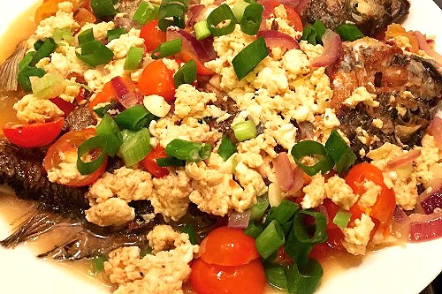

Best Filipino Recipe

Sarciadong Isda (Sarcastic Fish)
Prep time
10 mins
Cook time
30 mins
Total time
40 mins
SERVES: 4
Ingredients
2 lbs Tilapia, cleaned.
3 pieces medium-sized tomatoes, diced.
3 pieces medium-sized onions, diced.
1¾ cups water.
½ teaspoon ground black pepper.
½ cup green onions, chopped (optional).
2 teaspoons garlic, minced.
3 pieces raw eggs, beaten.
2 tablespoons fish sauce.
Instructions:
Heat oil in a frying pan then fry the fish. Ensure that salt has been rubbed over the fish before frying.
Remove the fish from the frying pan and place in a a plate with paper towels. Set aside.
Using a clean pan, heat about 2 teaspoons of cooking oil then sauté the garlic, onions, and tomatoes.
Add the fish sauce and ground black pepper then stir.
Put-in the chopped green onions and water then bring to a boil.
Add the fried fish and simmer for 3 to 5 minutes.
Pour the beaten eggs on the pan. Ensure that it is distributed evenly.
Once the eggs curdles or coagulates, you may start stirring the mixture.
Simmer for another 2 minutes than transfer to a serving plate.
Serve hot.
Share and enjoy!